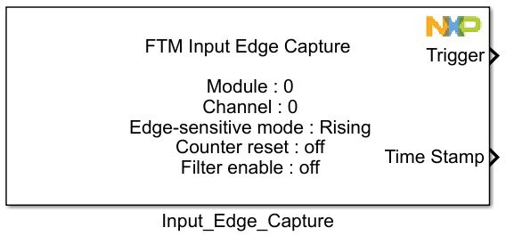
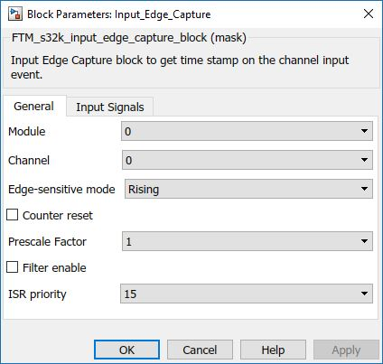
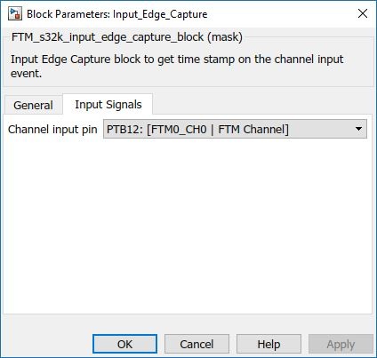

Input Edge Capture Block
The main functionality of the block is to generate a function call and get time stamp of the channel input event.
Block Image
Inputs:
- None
Outputs:
- Function-call
- Time in System Clock Ticks (uint16)
Parameters and Dialog Box
The block dialog consists of the following tabs:
General
The General tab contains the following parameters:
FTM Module
Select which FTM module to use.
- Range varies depending on the selected MCU in the main config block.
Channel
Channel selection
- Range: 0 – 7
Edge Selection
Get the time stamp on the event chosen
- Rising
- Falling
- Rising or Falling
Counter Reset
Reset the counter after each detected event
- Enable/Disable
Prescale factor for Time Stamp
The selected prescale factor for the time stamp
- 1 – 2 – 4 – 8 – 16 – 32 – 64 – 128
Filter Enable
When enabled will show value field
- Enable/Disable
ISR Priority
Interrupt priority level
- 0 – 3 - S32K11x
- 0 – 15 - S32K14x
Input Signals
The General tab contains the following parameters:
Input pin
Defines which input pin the signal to be measured is on
- Pin list varies depending on the selected MCU in the main config block.
Block Dependency
- None
Block Miscellaneous Details
- None